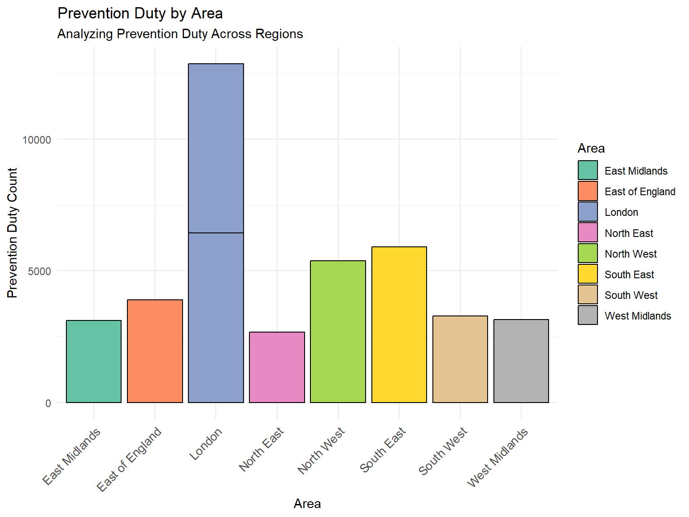

In this report, we analyze data related to homelessness decisions in UK from 2009 to 2018 and local authority homelessness decisions in 2023 based on various factors and also give some information on prediction of homelessness. The analysis is based on data-sets from reputable sources including local authority reports and property price data.
Background Review
Homelessness is a pressing issue in the UK, encompassing a range of situations from rough sleeping to living in temporary accommodations. Over the years, the number of people experiencing homelessness has seen fluctuations, influenced by various economic, social, and political factors.
Rough Sleeping: This is the most visible form of homelessness, referring to people who sleep on the streets, in doorways, parks, or other places not meant for habitation.
Temporary Accommodation: This includes individuals or families living in hostels, B&Bs, or other short-term housing solutions provided by local councils or charities.
Hidden Homelessness: Refers to people who don’t have a place of their own and stay with friends or family, often moving from one place to another.
Causes:
Economic Factors: Unemployment, poverty, and lack of affordable housing are significant contributors.
Social Factors: Relationship breakdowns, domestic abuse, and health issues, especially mental health, can lead to homelessness.
Systemic Issues: Gaps in social security benefits, lack of social housing, and other systemic challenges play a role.
Efforts to Address the Issue:
Various charities, NGOs, and local councils work tirelessly to provide shelter, food, and support to those affected. Government initiatives aim to reduce and prevent homelessness, but challenges remain. Understanding the trends and patterns of homelessness is crucial for policymakers, social workers, and charities to make informed decisions and bring about positive change.
Data Preparation and Analysis Setup
What is homelessness decisions?
The homelessness decisions refers to the number of individual or number of households that are Homeless in a particular local authority or traditional areas.
Code
# Load required librarieslibrary(ggplot2)library(dplyr)library(tidyr)library(readxl)library(plotly)library(stats)library(gridExtra)library(reshape2)# Load and process the trend datasetdata <-read_excel("PE1_2009-2018.xlsx")data[grep("^20", names(data))] <-lapply(data[grep("^20", names(data))], as.character)melted_data <- data %>%pivot_longer(cols =starts_with("20"), names_to ="Year", values_to ="Homelessness Decisions") %>%mutate(Year =as.numeric(substr(Year, 1, 4)),`Homelessness Decisions`=as.numeric(`Homelessness Decisions`) ) %>%replace_na(list(`Homelessness Decisions`=NA))total_homelessness_by_year <-aggregate(`Homelessness Decisions`~ Year, data=melted_data, FUN=sum)# Load and process the geographical datasetla_total <-read_excel("detailed_LA_23_total.xlsx", sheet =1)traditional_regions <-c("North East", "North West", "Yorkshire and the Humber", "East Midlands", "West Midlands", "East of England", "London", "South East", "South West")la_total_geo <- la_total[la_total$Area %in% traditional_regions, ]la_total_geo$Initial_assessment <-as.numeric(la_total_geo$Initial_assessment)la_total_geo$Prevention_duty <-as.numeric(la_total_geo$Prevention_duty)la_total_geo$Relief_duty <-as.numeric(la_total_geo$Relief_duty)# Load and process data for Support Need Analysisla_support <-read_excel("detailed_LA_23_total.xlsx", sheet =2)geo_regions_support_needs <- la_support[la_support$Area %in% traditional_regions, ]geo_regions_support_needs$household_no_support <-as.numeric(geo_regions_support_needs$household_no_support)geo_regions_support_needs$household_unknown_support <-as.numeric(geo_regions_support_needs$household_unknown_support)# Load and process data for Age_group Analysisla_age <-read_excel("detailed_LA_23_total.xlsx", sheet =3)age_groups <-c("16-17", "18-24", "25-34", "35-44", "45-54", "55-64", "65-74", "75plus")for (col in age_groups) { la_age[[col]] <-as.numeric(la_age[[col]])}geo_regions_age_duty <- la_age[la_age$Area %in% traditional_regions, ]# Load and process data for referral_group Analysisla_referral <-read_excel("detailed_LA_23_total.xlsx", sheet =4)referral_groups <-c("Adult_secure_estate(prison)", "Youth_secure_estate", "National_probation_service", "Community_rehabilition_company", "Ugent_treatment_centres", "Mental_health", "Jobcentre_plus", "Adult_social_services", "Children_social_services", "Children_early_help", "Nil_resource_team", "State_of_defence", "Unknown", "household_referred_by_agency", "Household_referred_by_local_authority")for (col in referral_groups) { la_referral[[col]] <-as.numeric(la_referral[[col]])}geo_regions_referral_duty <- la_referral[la_referral$Area %in% traditional_regions, ]get_referral_description <-c("Adult_secure_estate(prison)"="This indicates which regions have more referrals from prisons, potentially highlighting the need for better reintegration programs.","Youth_secure_estate"="This indicates which regions have more referrals from youth secure estates.","National_probation_service"="Regions with higher numbers here may require more focused services for individuals on probation.","Community_rehabilition_company"="This indicates regions with referrals from community rehabilitation companies.","Ugent_treatment_centres"="Referrals from urgent treatment centers indicate regions where immediate medical attention was sought.","Mental_health"="This can indicate the regions where mental health services may be most needed.","Jobcentre_plus"="This will show which regions have more referrals from employment services, potentially indicating a link between unemployment and homelessness.","Adult_social_services"="Regions with higher referrals from adult social services may indicate a need for more comprehensive social care programs.","Children_social_services"="Referrals from children's social services highlight regions with potential vulnerabilities among younger populations.","Children_early_help"="This indicates regions where early intervention services for children were sought.","Nil_resource_team"="Referrals from the Nil resource team can provide insights into specific cases without external resource involvement.","State_of_defence"="Regions with higher referrals from the state of defense may have populations involved in defense services.","Unknown"="For unknown referrals, the source of the referral wasn't clearly identified.","household_referred_by_agency"="Regions with more households referred by agencies can provide insights into the involvement of external organizations.","Household_referred_by_local_authority"="This shows regions where local authorities have been actively referring households." )# Load and prepare data for ethnicity_group Analysisla_ethnicity <-read_excel("detailed_LA_23_total.xlsx", sheet =5)ethnicity_groups <-c("British", "Irish", "Gypsy", "Other_white", "British_African", "British_Caribbean", "Other_black", "British_pakistani", "British_Indian", "British_Bangladeshi", "British_chinese", "Other_asian", "White_black_caribbean", "White_black_african", "White_asian", "Other_multiple_ethnic_background", "Arab", "Other_ethnic_groups", "Unknown")for (col in ethnicity_groups) { la_ethnicity[[col]] <-as.numeric(la_ethnicity[[col]])}geo_regions_ethnicity_duty <- la_ethnicity[la_ethnicity$Area %in% traditional_regions, ]# Load and prepare data for employment_group Analysisla_employment <-read_excel("detailed_LA_23_total.xlsx", sheet =6)employment_groups <-c("Full_time", "Part_time", "Student", "Registered_unemployed", "Not_registered_but_seeking", "Not_seeking", "Not_working_due_to_illness", "Retired", "Other", "Unknown")for (col in employment_groups) { la_employment[[col]] <-as.numeric(la_employment[[col]])}geo_regions_employment_duty <- la_employment[la_employment$Area %in% traditional_regions, ]# Load and prepare the price paid datasethouse_sale <-read_excel("ppd_data_headers.xlsx")relevant_columns <-c('unique_id', 'price_paid', 'deed_date', 'postcode', 'property_type', 'new_build', 'estate_type')house_sale <- house_sale %>%select(all_of(relevant_columns))house_sale <-na.omit(house_sale, cols ="postcode")house_sale$year <-as.numeric(format(house_sale$deed_date, "%Y"))avg_price_by_year <-aggregate(price_paid ~ year, data=house_sale, FUN=mean)
Homelessness is more than just a statistic; it’s a pressing societal concern that demands our collective awareness and action. So, let’s begin our exploration of this important topic by examining its different facets and the underlying causes.
Methodology and Results
Data visualisation of homelessness decisions of specific authority
Rationale for Selection of Local Authorities
In this report, we have chosen to analyze trends and data from the local authorities of Walsall, Dudley, Sandwell, and Wolverhampton within the West Midlands county. The decision to focus on these specific local authorities is underpinned by the following considerations:
1. Stakeholder Request: The project was initiated in collaboration with the Walsall Council, which expressed a particular interest in these four local authorities. Their request was driven by the unique administrative and geographical association of these councils within the Black Country region of the West Midlands.
2. Geographical and Administrative Cohesion: These local authorities, being part of the Black Country, exhibit a significant degree of geographical and administrative cohesion. They share common urban characteristics and face similar challenges, making them an ideal group for comparative analysis.
3. Interconnected Trends: Exploring trends within Walsall, Dudley, Sandwell, and Wolverhampton allows us to understand how urban policies and developments manifest in a region that is closely interconnected. By comparing and contrasting these local authorities, we can identify similarities and differences that hold valuable insights for local governance.
4. Stakeholder Alignment: Focusing on these specific authorities aligns with the objectives and interests of the Walsall Council, which seeks to gain a deeper understanding of regional trends and policy impacts within the Black Country. The chosen approach reflects our commitment to delivering results that directly address the organization’s needs and concerns.
We observe an initial sharp decline in homelessness in Walsall. This could be attributed to rapid improvements in conditions, such as the implementation of effective housing policies, increased job opportunities, or more robust social welfare programs. Following this, we witness a relatively stable period with minor fluctuations, suggesting steady conditions. However, in recent times, we notice a gradual increase, possibly due to worsening economic conditions, rising housing costs, or a decrease in the effectiveness of social programs.
Code
plot_specific_authority("Dudley", melted_data)
Figure 2: Dudley Trend
Dudley
Dudley presents a unique trend with an initial decrease in homelessness, followed by remarkable stability. It’s important to note that the initial decrease may be misleading, as it may be due to under-reporting rather than actual improvement in conditions. After the increase, we see a return to the baseline, indicating a level of stability in homelessness, with the exception of the unrecorded period.
Code
plot_specific_authority("Sandwell", melted_data)
Figure 3: Sandwell Trend
Sandwell
In Sandwell, an initial decline in homelessness suggests that policies or economic conditions were improving, leading to a reduction in homelessness. However, there’s a sharp increase in homelessness, indicating a potential economic crisis, policy changes, or a surge in housing costs.
Wolverhampton shows a trend of initial decrease in homelessness, reflecting improving conditions for vulnerable populations. Toward the end of the period, there’s a slight increase in homelessness, hinting at potential deterioration in conditions.
Analysis Explanation
In our report, we have chosen to focus on the traditional regions of “North East,” “North West,” “Yorkshire and the Humber,” “East Midlands,” “West Midlands,” “East of England,” “London,” “South East,” and “South West.” These regions were selected based on their geographic diversity, population density, economic significance, cultural and social diversity, accessibility to data, historical and policy relevance, and stakeholder interests. This selection allows us to provide a well-rounded analysis that aligns with the objectives of our study.
Initial Assessment by Area
Code
ggplot(la_total_geo, aes(x = Area, y = Initial_assessment, fill = Area)) +geom_bar(stat ="identity", color ="black") +theme_minimal() +theme(axis.text.x =element_text(angle =45, hjust =1, size =10)) +ggtitle("Initial Assessment by Area", subtitle ="Analyzing Initial Assessment Across Regions") +xlab("Area") +ylab("Initial Assessment Count") +scale_fill_brewer(palette ="Set2") +labs(fill ="Area")
Homelessness in 8 traditional areas
As London being the most populated area, it will mostly be having a lot of homelessness.
We will look at the second highest that is North West area.
The region has significant economic shifts in recent years possibly leading to job losses or wage stagnation.
The housing market might be less accommodating for low income individuals.
Understanding Prevention and Relief Duties in Homelessness Services
In the realm of homelessness services, a critical component of any comprehensive strategy is a nuanced understanding of prevention and relief duties. These two distinct but interrelated approaches are essential in addressing the complex issue of homelessness. Let’s delve into what these terms encompass:
Prevention Duty
Prevention duty is a proactive strategy aimed at thwarting homelessness before it takes root. It involves a range of measures, including:
Counseling and Advice: Providing individuals at risk of homelessness with vital information about their rights and the available support services. This empowers them to take preventive actions.
Financial Assistance: Offering financial support or guiding individuals facing housing instability toward available financial resources, thus addressing the financial barriers to stable housing.
Mediation: Intervening to resolve disputes that have the potential to lead to eviction or homelessness. By facilitating resolution, this duty prevents housing crises.
Housing Support: Assisting individuals in securing stable housing before they experience the trauma of homelessness. This involves finding suitable accommodation options and ensuring a smooth transition.
Relief Duty
In contrast, relief duty is a reactive approach that focuses on addressing the immediate needs of individuals and families who are already homeless. It encompasses:
Emergency Shelters: Providing immediate shelter to those in urgent need, ensuring they have a safe place to stay as a first step toward stabilization.
Rehousing: Assisting homeless individuals or families in finding long-term, stable accommodation, helping them transition out of homelessness and regain their independence.
Support Services: Offering an array of additional services such as mental health support, addiction counseling, job training, and other support services to address the complex challenges faced by homeless individuals and families.
Collaboration: Collaborating with other organizations, charities, and housing associations to create a network of support that ensures a comprehensive and holistic approach to relieving homelessness.
Prevention Duty by Area
Code
ggplot(la_total_geo, aes(x = Area, y = Prevention_duty, fill = Area)) +geom_bar(stat ="identity", color ="black") +theme_minimal() +theme(axis.text.x =element_text(angle =45, hjust =1, size =10)) +ggtitle("Prevention Duty by Area", subtitle ="Analyzing Prevention Duty Across Regions") +xlab("Area") +ylab("Prevention Duty Count") +scale_fill_brewer(palette ="Set2") +labs(fill ="Area")

Figure 5: Prevention Duty
A high number of households with prevention duty in the South East after London suggests that the region’s homelessness prevention services are actively identifying and assisting individuals or families facing housing instability. It’s a positive sign that measures are in place to proactively address the risk of homelessness and support those in need, potentially reducing the overall number of people experiencing homelessness in the area.
Relief Duty by Area
Code
ggplot(la_total_geo, aes(x = Area, y = Relief_duty, fill = Area)) +geom_bar(stat ="identity", color ="black") +theme_minimal() +theme(axis.text.x =element_text(angle =45, hjust =1, size =10)) +ggtitle("Relief Duty by Area", subtitle ="Comparing Relief Duty Across Regions") +xlab("Area") +ylab("Relief Duty Count") +scale_fill_brewer(palette ="Set2") +labs(fill ="Area")
Figure 6: Relief Duty
A high number of households with relief duty in the North West after London suggests that the region’s homelessness support services are actively addressing the immediate needs of individuals and families who are already homeless. This indicates a strong commitment to providing emergency shelter, rehousing assistance, and support services to those in crisis, aiming to help them transition out of homelessness and regain housing stability.
Support Need Analysis
Code
plot_no_support <-ggplot(geo_regions_support_needs, aes(x = Area, y = household_no_support)) +geom_bar(stat ="identity", fill ="skyblue") +theme(axis.text.x =element_text(angle =45, hjust =1)) +ggtitle("Household with No Support Needs by Geographical Regions")plot_unknown_support <-ggplot(geo_regions_support_needs, aes(x = Area, y = household_unknown_support)) +geom_bar(stat ="identity", fill ="salmon") +theme(axis.text.x =element_text(angle =45, hjust =1)) +ggtitle("Household with Unknown Support Needs by Geographical Regions")grid.arrange(plot_no_support, plot_unknown_support, ncol =2)
Figure 7: Support Need Analysis
Households with no support needs
These ar households that despite their housing situation have no identified additional vulnerabilities such as mental health issues, substance misuse, or other factors that might typically warrant additional support. Essentially, their primary need is housing.
Households with unknown support needs
This refers to households for which local authorities or service providers have not been able to determine whether there are any additional support needs. This can be due to a lack of comprehensive assessment, non-disclosure by the household, or other barriers that prevent a clear understanding of the household’s situation.
Homelessness Analysis by Age Group
Code
plot_all_age_groups <-function(data, age_groups) { data_long <- reshape2::melt(data, id.vars ="Area", measure.vars = age_groups)ggplot(data_long, aes(x = Area, y = value, fill = Area)) +geom_bar(stat ="identity", color ="black") +facet_wrap(~variable, scales ="free_y") +theme_minimal() +theme(axis.text.x =element_text(angle =45, hjust =1, size =10)) +ggtitle("Homelessness by Age Groups in Geographical Regions", subtitle ="Comparing Age Group Distribution Across Regions") +xlab("Geographical Region") +ylab("Homelessness Count") +scale_fill_brewer(palette ="Set2") +labs(fill ="Geographical Region") }data <- geo_regions_age_dutyage_group_plot <-plot_all_age_groups(data, age_groups)age_group_plot
Figure 8: Analysis based on age groups
The observation that the North East has remarkably low numbers of homeless individuals in each age group is an encouraging sign of effective homelessness prevention and support efforts in the region. It suggests that the region has been successful in proactively addressing the risk of homelessness across various age groups, resulting in lower overall homelessness rates.
The fact that the age group 16-17 is distributed across various areas indicates a dispersion of younger homeless individuals in different parts of the North East. This dispersion could be due to a variety of factors, including family dynamics, educational opportunities, and the availability of support services.
South East and South West shows a high number of homelessness in age 75 plus. This could be due to lack of adequate care facilities or support systems. There can be possible migration patterns like some elderly moving to these regions for retirement but face unforeseen challenges.
Homelessness Analysis by Referral Sources
Referral Source Descriptions
Adult Secure Estate (Prison): Indicates which regions have more referrals from prisons, potentially highlighting the need for better reintegration programs.
Youth Secure Estate: Indicates which regions have more referrals from youth secure estates.
National Probation Service: Regions with higher numbers here may require more focused services for individuals on probation.
Community Rehabilitation Company: Indicates regions with referrals from community rehabilitation companies.
Urgent Treatment Centres: Referrals from urgent treatment centers indicate regions where immediate medical attention was sought.
Mental Health: Indicates the regions where mental health services may be most needed.
Jobcentre Plus: Shows which regions have more referrals from employment services, potentially indicating a link between unemployment and homelessness.
Adult Social Services: Regions with higher referrals from adult social services may indicate a need for more comprehensive social care programs.
Children Social Services: Referrals from children’s social services highlight regions with potential vulnerabilities among younger populations.
Children Early Help: Indicates regions where early intervention services for children were sought.
Nil Resource Team: Referrals from the Nil resource team can provide insights into specific cases without external resource involvement.
State of Defence: Regions with higher referrals from the state of defense may have populations involved in defense services.
Unknown: For unknown referrals, the source of the referral wasn’t clearly identified.
Household Referred by Agency: Regions with more households referred by agencies can provide insights into the involvement of external organizations.
Household Referred by Local Authority: Shows regions where local authorities have been actively referring households.
Code
plot_all_referral_sources <-function(data, referral_groups) { data_long <- reshape2::melt(data, id.vars ="Area", measure.vars = referral_groups)ggplot(data_long, aes(x = Area, y = value, fill = Area)) +geom_bar(stat ="identity", color ="black") +facet_wrap(~variable, scales ="free_y") +theme_minimal() +theme(axis.text.x =element_text(angle =45, hjust =1, size =10)) +ggtitle("Homelessness Referrals by Sources in Traditional Regions", subtitle ="Comparing Referral Sources Across Regions") +xlab("Traditional Region") +ylab("Referral Count") +scale_fill_brewer(palette ="Set2") +labs(fill ="Traditional Region") }data <- geo_regions_referral_dutyreferral_source_plot <-plot_all_referral_sources(data, referral_groups)referral_source_plot
Figure 9: Analysis based on reference groups
We can see State of Defence has not given any referrals for the homelessness. The State of Defence or the defense department of a country typically focuses on matters related to national security, military defense, and foreign policy. Homelessness, on the other hand, is a social and economic issue that primarily falls under the purview of different government departments or agencies, such as housing, social services, or community development, depending on the country’s administrative structure.
Most of the sources have given incomplete information that means they have not reported the number of homelessness in each area. The possible reason for this scenario is that they don’t have their companies in every area or they don’t have access to homeless details in each region.
Homelessness Analysis based on Ethnicity groups
Code
plot_all_ethnicities <-function(data, ethnicity_groups) { data_long <- reshape2::melt(data, id.vars ="Area", measure.vars = ethnicity_groups)ggplot(data_long, aes(x = Area, y = value, fill = Area)) +geom_bar(stat ="identity", color ="black") +facet_wrap(~variable, scales ="free_y") +theme_minimal() +theme(axis.text.x =element_text(angle =45, hjust =1, size =10)) +ggtitle("Homelessness Cases Identifying as Different Ethnicities in Geographical Regions", subtitle ="Comparing Ethnicity Distribution Across Regions") +xlab("Geographical Region") +ylab("Homelessness Count") +scale_fill_brewer(palette ="Set2") +labs(fill ="Geographical Region") }data <- geo_regions_ethnicity_dutyethnicity_plot <-plot_all_ethnicities(data, ethnicity_groups)ethnicity_plot
Figure 10: Analysis based on ethnicity groups
The presence of a high number of individuals of British ethnicity experiencing homelessness in the UK is influenced by broader social and economic factors rather than the UK’s status as a “British-dominant” country. Homelessness is a complex issue that can affect people from all backgrounds, and it is primarily driven by economic disparities, housing affordability, and individual circumstances. While the UK has a diverse population, homelessness is a societal challenge that transcends ethnicity and is rooted in a combination of factors related to housing, employment, mental health, addiction, and social support systems.
The North East of the UK boasts the lowest homelessness rates for all ethnicity groups, reflecting the region’s success in addressing housing instability. Factors contributing to this positive trend include a stable local economy, affordable housing options, strong social services, and robust community support networks. Additionally, the region’s demographic composition and local policies may further contribute to lower homelessness rates. This achievement underscores the effectiveness of coordinated efforts to prevent and combat homelessness, benefiting individuals of all backgrounds in the North East.
Homelessness Analysis based on the Employment Groups
Employment Status Descriptions
Full Time: High numbers here could indicate a need for affordable housing or living wage initiatives.
Part Time: High numbers might indicate employment instability as a factor in homelessness.
Student: High number might indicate students who are highly in debt because of their study fees and been homeless because they don’t have any source of income.
Registered Unemployed: These regions potentially require job training or employment programs.
Not Registered but Seeking: High number indicates that there is so much difficulty in finding a job that people are homeless because of being unemployed even after getting good quality of education.
Not Seeking: The high count in this category possibly points to other factors like illness or disability as the main issue.
Not Working Due to Illness: High number gives us an idea as to where we need to invest more in terms of healthcare.
Retired: This will show which regions have homelessness cases among retirees.
Code
plot_all_employment_statuses <-function(data, employment_groups) { data_long <- reshape2::melt(data, id.vars ="Area", measure.vars = employment_groups)ggplot(data_long, aes(x = Area, y = value, fill = Area)) +geom_bar(stat ="identity", color ="black") +facet_wrap(~variable, scales ="free_y") +theme_minimal() +theme(axis.text.x =element_text(angle =45, hjust =1, size =10)) +ggtitle("Homelessness by Employment Status in Geographical Regions", subtitle ="Comparing Employment Status Across Regions") +xlab("Geographical Region") +ylab("Homelessness Count") +scale_fill_brewer(palette ="Set2") +labs(fill ="Geographical Region") }data <- geo_regions_employment_dutyemployment_status_plot <-plot_all_employment_statuses(data, employment_groups)employment_status_plot
Figure 11: Analysis of different employment
As observed in Figure 8, there are a lot number of homeless of age groups 18-24 in North West and as we can see in Figure 11 there are a lot of students who are homeless in North West area. This can be a reason because most of the students are studying or doing temporary part-time jobs that doesn’t give job security and many shifts.
Top 5 local authority analysis
Code
top_authorities_data <- melted_data %>%filter(`Local authority area`%in% (melted_data %>%filter(`Local authority area`!='ENGLAND') %>%group_by(`Local authority area`) %>%summarize(Average =mean(`Homelessness Decisions`, na.rm =TRUE)) %>%arrange(desc(Average)) %>%head(5) %>%pull(`Local authority area`)))p <-ggplot(top_authorities_data, aes(x = Year, y =`Homelessness Decisions`, color =`Local authority area`)) +geom_line() +geom_point() +ggtitle("Top 5 Local Authorities by Average Number of Homelessness Decisions (Excluding England)") +xlab("Year") +ylab("Number of Homelessness Decisions") +theme_minimal() +theme(legend.position="bottom")print(p)
Figure 12: Trend Analysis for the top 5 local authorities
According to the project officials, Birmingham as the highest for average homelessness should be ignored due to multiple reasons:
Population Size: Birmingham is one of the most populous cities in the UK. A larger population often correlates with a higher number of homelessness cases simply due to the sheer number of people living in the area.
Economic Factors: Birmingham has areas of significant deprivation. High unemployment rates, poverty, and a lack of affordable housing can contribute to homelessness.
Migration: As a major city, Birmingham attracts people from surrounding areas and even internationally. Some might come looking for better opportunities but end up homeless due to a variety of reasons, including job scarcity in certain sectors or the inability to secure housing.
Services Availability: Cities like Birmingham often have more services for homeless people compared to rural areas or smaller towns. This can sometimes act as a magnet, drawing in homeless individuals from surrounding areas.
Housing Market: The availability of affordable housing can be a significant challenge in larger cities. High demand can drive up rental prices, making it difficult for those with low income or facing economic hardships to secure stable housing.
Social Factors: Larger cities often see a higher incidence of factors that can lead to homelessness, such as family breakdowns, domestic violence, and substance abuse.
Visibility: In larger cities, homelessness might be more visible, especially in central or busy areas. This can sometimes give the impression that the problem is more significant than in areas where homelessness is less visible.
Average homelessness trend
Code
mean_data <- melted_data %>%group_by(Year) %>%summarize(Mean =mean(`Homelessness Decisions`, na.rm =TRUE))p <-ggplot(mean_data, aes(x = Year, y = Mean)) +geom_line() +geom_point() +ggtitle("Mean Number of Homelessness Decisions per Year") +theme_minimal()print(p)
Figure 13: Average homelessness trend
House price index in each area
annual house price percentage change
Price vs homelessness analysis
Code
combined_data <-merge(avg_price_by_year, total_homelessness_by_year, by.x="year", by.y="Year")ggplot(combined_data) +geom_line(aes(x=year, y=price_paid, color="Average Property Price")) +geom_line(aes(x=year, y=`Homelessness Decisions`, color="Total Homelessness Decisions")) +geom_point(aes(x=year, y=price_paid)) +geom_point(aes(x=year, y=`Homelessness Decisions`)) +ggtitle("Average Property Price vs Total Homelessness by Year") +xlab("Year") +ylab("Value") +scale_y_continuous(sec.axis =sec_axis(~., name ="Total Homelessness Decisions")) +theme_minimal()
Figure 14: Comparison between House Pricing and Homelessness
As we see a rise in property prices towards the end of our data, but still there’s a noticeable decrease in homelessness. This isn’t just a coincidence. In 2018, a pivotal legislative action, the Homelessness Reduction Act, was enacted. Key provisions of this Act include:
• Proactive Approach: Early interventions by local councils to curb homelessness.
• Extended Support Window: Assistance period for those at risk doubled to 56 days.
• Mandatory Referrals: Essential services are now bound to alert housing teams about individuals facing homelessness.
• Personalized Plans: Customized housing strategies are developed for every individual in need.
• Wider Support Scope: The Act extends its support net, especially targeting single homeless individuals.
This Act’s introduction has evidently played a significant role in counteracting the homelessness trend, even as property prices climbed.
Koopman Theory and Research
Why Predict Homelessness?
Predicting homelessness allows us to focus on prevention.
Efficient resource allocation for social services and housing programs.
Reduces economic burden on healthcare, emergency services, and the criminal justice system.
Positions the UK as a global leader in social policy.
Improves lives by ensuring opportunities for stable housing, health, education, and employment.
Regression-based Analysis
Given, at time step (year), we can represent homelessness decisions as a function of year and factors like ‘Local Authority Regions’ and ‘Homelessness Decisions’.
Regression often makes assumptions about data linearity, homoscedasticity, normality, and independence.
Regression models might ignore the temporal nature of data.
Let’s dive more into the assumptions:
Linearity: Regression models assume a linear relationship between the independent variables and the dependent variable (in this case, homelessness).
Homoscedasticity: This term refers to the assumption that the variance of the residuals (the differences between observed and predicted values) is constant across all levels of the independent variables.
Normality: Regression models often assume that the residuals are normally distributed.
Independence: Regression assumes that the observations are independent of each other, meaning that the value of the dependent variable for one observation does not depend on the value of the dependent variable for any other observation.
Due to these reasons, we can’t use regression analysis for homelessness predictions as the homelessness is affected by various temporal factors and it changes over time. There are multiple assumptions that we discussed that won’t account for homelessness data. Plus the comprehensive data is so challenging to obtain and there were no regular updates in homelessness records. And major factor is homeless data has non linearity in the data-set.
The Rise of Deep Learning
With advancements in computational capabilities and data abundance, neural networks have become state-of-the-art for prediction tasks, including time-series predictions using architectures like RNNs.
Deep learning is a subset of machine learning that employs artificial neural networks with multiple layers to automatically learn and understand complex patterns in data.
Understanding the Koopman Theory
The Koopman Theory simplifies the complex dynamics of dynamic systems. It uses a Koopman Operator (K) and observable functions (ϕ) to predict future states.
The discrete mapping between the target variable can be represented as:
\[
y_{t+1} = F(y_t)
\]
Where ( F() ) is a non-linear function mapping which is usually unknown.
Lifting operation to represent in linear space using an observable function ( () ), which gives:
\[
z_t = \phi(y_t) \in \mathbb{R}^k
\]
Where ( k ) can be infinite dimensional long.
The mapping can be given using a linear operation:
We can exploit the property of linearity to make multi-time step predictions.
Neural Network Approach for Koopman
The Koopman Autoencoder (KAE) uses an Encoder and Decoder approach.
Koopman Autoencoder
Training the Koopman Autoencoder
Training considers multiple loss functions, including reconstruction loss, linearity loss, and prediction loss.
Applications of Koopman Autoencoder
Use-cases of Koopman Autoencoder
Conclusion
Highlights of Interesting Results/Findings:
The analysis unearthed distinct trends in homelessness across different local authorities in the UK, with each region exhibiting unique patterns over time.
The Homelessness Reduction Act of 2018 has had a noticeable impact, correlating with a decline in homelessness rates despite increasing property prices.
Key factors such as age, ethnicity, employment status, and referral sources significantly influence homelessness trends.
Policy/Practical Implications:
The study’s findings emphasize the importance of tailored policy interventions for different regions, acknowledging their unique homelessness trends.
The positive impact of the Homelessness Reduction Act suggests that similar legislative measures could be effective in further reducing homelessness rates.
Significance of the Analysis:
The analysis provides a nuanced understanding of homelessness trends, guiding policymakers in crafting more targeted and effective strategies to combat homelessness.
By identifying key influencing factors, the study opens avenues for targeted social welfare programs.
Limitations and Caveats:
The traditional regression models used in the analysis have limitations in capturing the temporal and nonlinear aspects of the data.
The scope of the analysis may be limited by the availability and quality of data on homelessness across different regions.
Future Analysis:
Future studies could employ the Koopman Theory and the Koopman Autoencoder (KAE) approach, leveraging deep learning to better model and predict homelessness trends.
Further research could also explore the long-term impacts of policy changes and economic fluctuations on homelessness.
Citation
Anderson, I. (Year). Synthesizing Homelessness Research: Trends, Lessons and Prospects.
Clapham, D. (Year). Remaking Housing Policy: An International Study.
Crane, M., & Warnes, A. M. (Year). Homelessness among older people and service responses.
Fitzpatrick, S., Johnsen, S., & Bramley, G. (Year). Multiple exclusion homelessness amongst migrants in the UK.
Fitzpatrick, S., Pawson, H., Bramley, G., & Wilcox, S. (Year). Housing and Support for Homeless and Vulnerably Housed People: A Review of the Evidence Base.
Gürdür Broo, D., Lamb, K., Ehwi, R. J., Pärn, E., Koronaki, A., Makri, C., & Zomer, T. (Year). Built environment of Britain in 2040: Scenarios and strategies.
Henderson, J., & Karn, V. (Year). Race, Class and the Allocation of Public Housing in Britain.
Philips, D. (Year). Moving Towards Integration: The Housing of Asylum Seekers and Refugees in Britain.
Pleace, N., & Quilgars, D. (Year). Led rather than leading? Research on homelessness in Britain.
Sermons, M. W., & Henry, M. (Year). Demographics of Homelessness Series: The Rising Elderly Population.